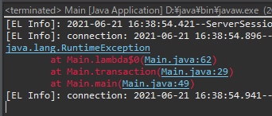
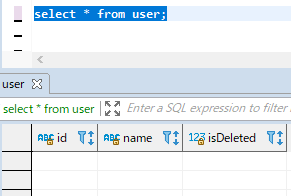
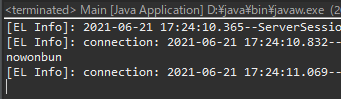

[Java] 49. JPAでトランザクション(transaction)を扱う方法と共通関数作成する方法(Observerパターン)
こんにちは。明月です。
この投稿はJPAでトランザクション(transaction)を扱う方法と共通関数作成する方法(Observerパターン)に関する説明です。
トランザクション(transaction)とはデータベースで論理的な状態の変化、つまりInsert、Update、Deleteでデータベースのデータの更新があることをトランザクション(transaction)という意味です。その意味でデータの更新が多いことをトランザクション(Transaction)テーブル、そうではないことをマスタ(Master)テーブルといいます。
このトランザクション(transaction)は範囲を設定することができますが、範囲設定を通ってアトミック（Atomicity）、一貫性（Consistency）、独立性（Isolation）、耐久性（Durability）を守れられます。
もっと理解しやくのため、ウェブを通って会員登録設定を作ると思いましょう。
会員登録を通って基本的なIDと様々なテーブルにデータを同時にinsertをすると思いましょう。でも、最初IDがある基本情報テーブルにinsertを完了して様々なテーブルにinsertする途中でエラーが発生しました。
つまり、テーブル一つの単位でトランザクション(transaction)をかけ、基本情報のデータをinsertしましたが、エラーが発生して他のテーブルにinsertをできませんでした。そうならデータの無結成を守られません。
それですべてのデータがしっかりinsertにした後、commitを通って一括で同時にデータが格納され、もし、エラーが発生すればcommitかわりにrollbackを通って途中でinsertしたデータをトランザクションが始まる前の状況に戻らなければなりません。
それをトランザクション(transaction)範囲設定です。
import java.util.Date;
import javax.persistence.EntityManager;
import javax.persistence.EntityManagerFactory;
import javax.persistence.EntityTransaction;
import javax.persistence.Persistence;
import model.User;
import model.Info;
import model.Info2;
public class Main {
// 実行関数
public static void main(String... args) {
// FactoryManagerを生成する。"JpaExample"はpersistence.xmlに書いている名だ。
EntityManagerFactory emf = Persistence.createEntityManagerFactory("JpaExample");
// Managerを生成する。
EntityManager em = emf.createEntityManager();
try {
// transactionを取得
EntityTransaction transaction = em.getTransaction();
try {
// transaction実行
transaction.begin();
// Userインスタンスを生成
User user = new User();
// データ設定
user.setId("nowonbun");
user.setName("tester");
user.setIsDeleted(false);
// データ入力
em.persist(user);
// Infoインスタンスを生成
Info info = new Info();
// Userインスタンスにinfoデータを連結
user.addInfo(info);
// データ設定
info.setAge(20);
// データ入力
em.persist(info);
// エラー強制発生
if (true) {
// ここでエラーが発生する。上のUserデータとInfoに格納データは戻らなければならない。
throw new RuntimeException();
}
// Info2インスタンスを生成
Info2 info2 = new Info2();
// Infoインスタンスにinfo2データを連結
info.addInfo2(info2);
// データ設定
info2.setBirth(new Date());
// データ入力
em.persist(info);
// transactionをコミット
transaction.commit();
} catch (Throwable e) {
// エラーが発生すればrollbackする。
if (transaction.isActive()) {
transaction.rollback();
}
// エラー出力
e.printStackTrace();
}
} finally {
// 各FactoryManagerとManagerを閉める。
em.close();
emf.close();
}
}
}

上のソースは私が途中でpersist関数を使ってデータを格納する関数を呼び出しましたが、途中にRuntimeExceptionで強制にエラーを発生しました。そして上のトランザクション(transaction)範囲でcommitを実行しなずにrollbackを実行することにしてpersist関数やmerge関数、remove関数で呼び出したデータがデータベースのデータが更新しなずにそのままにトランザクション(transaction)範囲を設定する以前状態に戻ります。

実はJPAはこのtransaction範囲を設定しなければデータが入力されません。
つまり、transaction設定はJPAでは必須ということです。
なので、このtransacion部分を共通関数に設定して、共通関数を呼び出してトランザクション(transacion)を設定して完了すればcommitを実行するし、エラーが発生すれば自動にrollbackが発生する共通関数を作成する必要があります。
以前の投稿でも私が簡単に共通関数を作成して簡単にトランザクションを設定して使いましたが、今回は実際のプロジェクトで使える共通関数を作成しましょう。
import java.io.Closeable;
import javax.persistence.EntityManager;
import javax.persistence.EntityManagerFactory;
import javax.persistence.EntityTransaction;
import javax.persistence.Persistence;
// close関数を再定義するための継承
public class JPATransaction implements Closeable {
// FactoryManagerを生成する。"JpaExample"はpersistence.xmlに書いている名だ。
private EntityManagerFactory emf = Persistence.createEntityManagerFactory("JpaExample");
// ラムダ式のためのinterface
interface EntityManagerCallable<V> {
V run(EntityManager em);
}
// ラムダ式のためのinterface
interface EntityManagerRunable {
void run(EntityManager em);
}
// リターン値があるトランザクション(一般トランザクションでデータを更新可能)
public <V> V transaction(EntityManagerCallable<V> callable) {
return transaction(callable, false);
}
// リターン値があるトランザクション(readonlyをtrueに設定すれば関数を呼び出す間にcommitを実行しません。)
public <V> V transaction(EntityManagerCallable<V> callable, boolean readonly) {
// Managerを生成
EntityManager em = emf.createEntityManager();
// transactionを取得
EntityTransaction transaction = em.getTransaction();
// トランザクション開始
transaction.begin();
try {
// ラムダ式を実行
V ret = callable.run(em);
// readonlyがtrueならrollbackする。
if (readonly) {
transaction.rollback();
} else {
// トランザクションをデータベースに格納
transaction.commit();
}
// 結果をリターン
return ret;
// エラーが発生する場合
} catch (Throwable e) {
// transactionが活性中なら
if (transaction.isActive()) {
// rollback
transaction.rollback();
}
// RuntimeExceptionに変換
throw new RuntimeException(e);
} finally {
// Managerを閉める。
em.close();
}
}
// リターン値がないtransaction(一般トランザクションでデータを更新可能)
public void transaction(EntityManagerRunable runnable) {
transaction(runnable, false);
}
// リターン値がないtransaction(readonlyをtrueに設定すれば関数を呼び出す間にcommitを実行しません。)
public void transaction(EntityManagerRunable runnable, boolean readonly) {
// Managerを生成
EntityManager em = emf.createEntityManager();
// transactionを取得
EntityTransaction transaction = em.getTransaction();
// トランザクション開始
transaction.begin();
try {
// ラムダ式を実行
runnable.run(em);
// readonlyがtrueならrollbackする。
if (readonly) {
transaction.rollback();
} else {
// トランザクションをデータベースに格納
transaction.commit();
}
// エラーが発生する場合
} catch (Throwable e) {
// transactionが活性中なら
if (transaction.isActive()) {
// rollback
transaction.rollback();
}
// RuntimeExceptionに変換
throw new RuntimeException(e);
} finally {
// Managerを閉める。
em.close();
}
}
// close関数を再定義(Closeableインタフェース)
@Override
public void close() {
// 閉める
emf.close();
}
}
私はJPATransactionのクラス名でトランザクションクラスを作成しました。
基本的に使う関数はtransactionで総4パターンのオーバーロード(Overloading)しました。
大きい概念でtransacionからリターン値がないタイプ(void)と結果があるObjectタイプの形です。ここでObjectはラムダ式でジェネリックタイプでリターンタイプを設定します。
そしてその小さい概念でboolean readonlyを設定して、もしパラメータのbooleanタイプがなければ基本falseになる総4パターンです。
ここでtransacionのリターンタイプがvoidはinsert、 update、 deleteを実行する時に使うtransacionだし、ジェネリックタイプでリターンタイプを設定する場合はselectを使う時に使うtransactionです。
import java.util.ArrayList;
import java.util.Date;
import model.User;
import model.Info;
import model.Info2;
public class Main {
// 実行関数
public static void main(String... args) {
try (JPATransaction transaction = new JPATransaction()) {
// ラムダ式の中でreturnが無いので、リターン値がないtransaction関数を呼び出す。
// そしてboolean値もないので、public void transaction(EntityManagerRunable runnable)を呼び出す。
transaction.transaction((em) -> {
// Userインスタンス生成
User user = new User();
// データ設定
user.setId("nowonbun");
user.setName("tester");
user.setIsDeleted(false);
user.setInfos(new ArrayList<>());
// Infoインスタンス生成
Info info = new Info();
// Userインスタンスにinfoデータを連結
user.addInfo(info);
// データ設定
info.setAge(20);
info.setInfo2s(new ArrayList<>());
// Info2インスタンスを生成
Info2 info2 = new Info2();
// Infoインスタンスにinfo2データを連結
info.addInfo2(info2);
// データ設定
info2.setBirth(new Date());
// データ入力
em.persist(user);
});
// ラムダ式の中でreturnがあるので、リターン値があるtransaction関数を呼び出す。
// そしてboolean値もないので、public <V> V transaction(EntityManagerCallable<V> callable)を呼び出す。
// ここでtransactionから受けるデータタイプがUserなのでジェネリックタイプは自動にUserに設定する。
User user = transaction.transaction((em) -> {
// データを一つ取得
return (User) em.createNamedQuery("User.findAll").getSingleResult();
});
// コンソール出力
System.out.println(user.getId());
}
}
}

JPATransactionクラスはCloseableインタフェースを継承しているのでtry()キーワードを利用して自動にclose関数を呼び出すように作成します。
そしてtransactionの関数を二回に呼び出しましたが、始めはリターン値がないtransacion関数でbooleanパラメータもないのでreadonlyはfalseに設定され呼び出します。
そうことで始めのtransacionラムダ式を終了すればデータがinsertされ、次のtransactionはデータを更新することではなく、単純にEntityManagerのインスタンスを取得してselectしてデータを取得する流れです。
ジェネリックは別に設定しなくても、ラムダ式のジェネリックタイプはリターンタイプで自動に設定するので、returnタイプがUserタイプなので変数はUserタイプで取得しなければならないです。
実際にデータをコンソールに出力するなら始めのトランザクションで入力したデータが出力しました。
JPAの基本関数で上みたにトランザクション共通関数があればよいのに別にそんな関数はありません。プロジェクトを作成するたびに作成しなければならないです。でも、一回に作成すると再使用で簡単に使えるので、上のタイプに作成したらよいです。
ここまでJPAでトランザクション(transaction)を扱う方法と共通関数作成する方法(Observerパターン)に関する説明でした。
ご不明なところや間違いところがあればコメントしてください。
- [Java] 56. Web serviceのサーブレット(Servlet)で初期化作業(properties設定)2021/07/02 17:10:36
- [Java] 55. Spring frameworkに文字化けを解決する方法(Encoding設定)2021/06/30 16:37:16
- [Java] 54. Spring frameworkでWeb filterを使う方法2021/06/29 18:25:12
- [Java] 53. ウェブサービス(Web service)でエラーページを処理する方法2021/06/25 13:35:54
- [Java] 52. SpringフレームワークでDAOをFactory method Patternを利用して依存性注入する方法2019/10/17 07:15:48
- [Java] 51. SpringフレームワークでJPAを使い方(依存性注入@Autowired)2019/10/16 07:32:55
- [Java] 50. JPAプロジェクトでDAOクラスを作成する方法2019/10/15 20:12:35
- [Java] 49. JPAでトランザクション(transaction)を扱う方法と共通関数作成する方法(Observerパターン)2019/10/14 20:13:44
- [Java] 48. JPAでQueryを使う方法(JPQLクエリを作成する方法)2019/10/13 22:55:52
- [Java] 47. JPAのEntityクラスのリファレンス設定(cascade, fetch)2019/10/13 00:40:08
- [Java] 46. JPAのEntityクラスの基本設定(@GeneratedValue、 @ManyToMany)2019/10/11 07:30:14
- [Java] 45. JPAを設定する方法2019/10/10 07:29:43
- [Java] 44. Web Spring frameworkのviewで使うプログラム言語(JSTL) - XML2019/10/09 07:34:08
- [Java] 43. Web Spring frameworkのviewで使うプログラム言語(JSTL) - 関数、データベース2019/10/08 07:43:33
- [Java] 42. Web Spring frameworkのviewで使うプログラム言語(JSTL) - コア―、フォーマット2019/10/07 07:38:13
- [Java] 64.Spring bootとReactを連結する方法(Buildする方法)2022/03/25 21:02:18
- [Javascript] Node.jsをインストールしてReactを使う方法2022/03/23 18:01:34
- [Java] 63. Spring bootでcronスケジューラとComponentアノテーション2022/03/16 18:57:30
- [Java] 62. Spring bootでWeb-Filterを設定する方法(Spring Security)2022/03/15 22:16:37
- [Java] JWT(Json Web Token)を発行、確認する方法2022/03/14 19:12:58
- [Java] 61. Spring bootでRedisデータベースを利用してセッションクラスタリング設定する方法2022/03/01 18:20:52
- [Java] 60. Spring bootでApacheの連結とロードバランシングを設定する方法2022/02/28 18:45:48
- [Java] 59. Spring bootのJPAでEntityManagerを使い方2022/02/25 18:27:48
- [Java] 58. EclipseでSpring bootのJPAを設定する方法2022/02/23 18:11:10
- [Java] 57. EclipseでSpring bootを設定する方法2022/02/22 19:04:49
- [Python] Redisデータベースに接続して使い方2022/02/21 18:23:49
- [Java] Redisデータベースを接続して使い方(Jedisライブラリ)2022/02/16 18:13:17
- [C#] Redisのデータベースを接続して使い方2022/02/15 18:46:09
- [CentOS] Redisデータベースをインストールする方法とコマンドを使い方2022/02/14 18:33:07
- [Design pattern] 3-6. ステートパターン(State pattern)2021/11/17 20:04:47